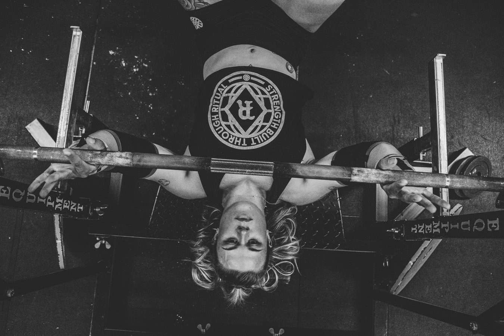
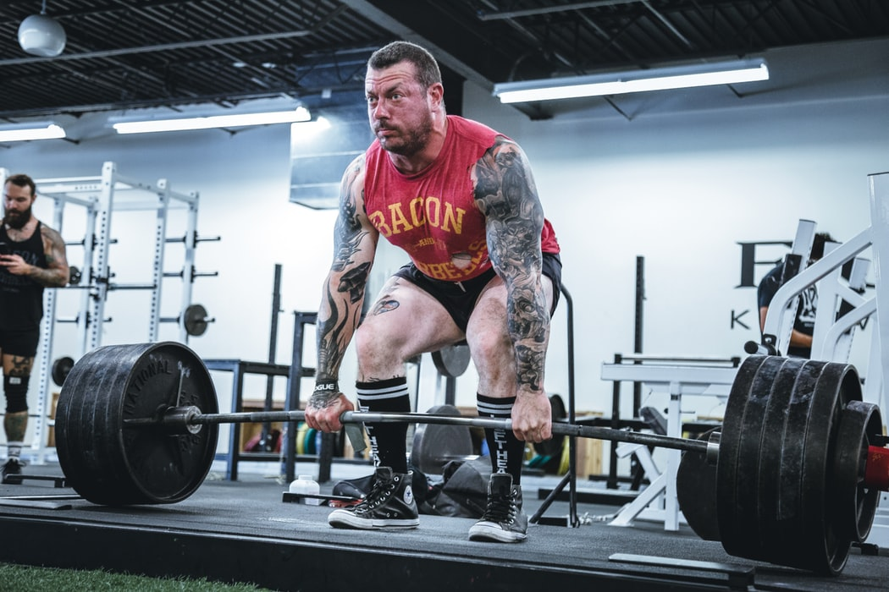
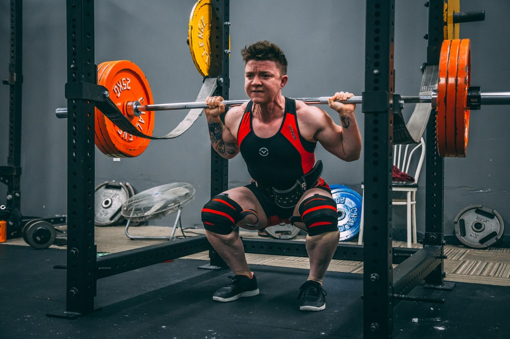

Powerlifting is made up of three main lifts. Those lifts are the bench press , deadlift and squat. The total of those three lifts are added together to get your total. On a meet day the competitor will have three attempts at the three main lifts. The competitor's total will be put up against people in the same weight class. Many beginners will see the most progress by cutting weight to put themself into the proper weight class rather than trying to immediately get stronger.
There are simple rules to follow with each of these three lifts. Each set of rules is dependant on the federation hosting the competition. The usual rules are that when squating, you must go deep enough that your hip crease goes below the knee. When bench pressing your feet must stay planted on the floor, your butt, shoulders and head must stay in contact with the bench and the barbell must touch your chest and fully go back up. The deadlift is most simple, the lifter must lift the weight and fully lock out and the bar can not start to go back down.
  When someone is going to the gym everyday and not seeing results it is usually because of one of these three reasons. You can be working out enough and dieting right, but if you're barely sleeping at night your muscles won't have time to recover. You can also be working out right and sleeping plenty but if you're not eating enough protein that your body needs you won't see the results you want.
There are endless powerlifting programs out there. The main thing to remember when looking for a new powerlifting program is that there is no magic program. There isn't a magic number of sets that will get you stronger faster. It all goes back to the basics of lifting heavy and recovering to get stronger.
Personally, I would recommend a push, pull legs routine or a simple 5x5 routine to a beginner. The most important thing for a new lifter to focus on is form and discipline. Form sets a good foundation and will keep the lifter from getting hurt. Discipline will show you that you are capable of eating healthy and meal prepping and going to the gym everyday.